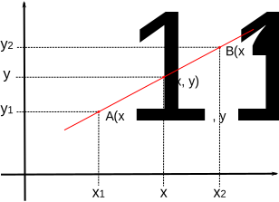
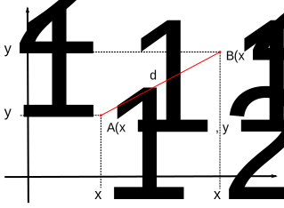
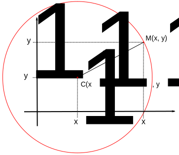
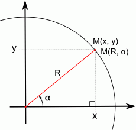
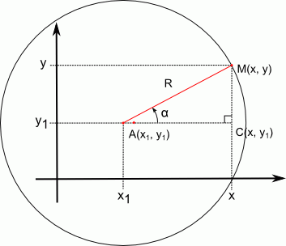

En esta página se incluyen algunas fórmulas matemáticas elementales. La demostración de algunas de estas fórmulas se encuentra en la lección Demostración de fórmulas matemáticas.
Una ecuación de primer grado es una ecuación del tipo:
`a x + b = 0`
donde `a` y `b` son números cualesquiera.
Si `x` es un número real, la ecuación puede tener 0, 1 o infinitas soluciones, dependiendo de los valores de `a` y `b`:
Una ecuación de segundo grado es una ecuación del tipo:
`a x^2 + b x + c = 0`
donde `a`, `b` y `c` son números cualesquiera.
Nota: Para que se trate de una ecuación de segundo grado, `a` tiene que ser distinta de 0. Si `a = 0`, se trataría de una ecuación de primer grado.
Si `x` es un número real, la ecuación puede tener 0, 1 o 2 soluciones, dependiendo del valor de `b^2-4ac`:
Un sistema de ecuaciones de primer grado es un sistema del tipo:
`{ (a_1 x + b_1 y = c_1), (a_2 x + b_2 y = c_2) :}`
donde `a_1`, `b_1`, `c_1`, `a_2`, `b_2` y `c_2` son números cualesquiera.
Las soluciones de un sistema de ecuaciones se suelen expresar escribiendo:
`x = x_1` e `y = y_1`
o escribiendo:
`(x_1, y_1)`
Un sistema de ecuaciones de primer grado puede tener 0, 1 o infinitas soluciones, dependiendo del valor de `a_1 b_2 - a_2 b_1` y de `c_1` y `c_2`:
Una sucesión artimética (o progresión aritmética) es una serie ordenada de números ...
`U_n = { U_0, U_1, U_2, U_3, U_4, ...}`
en la que la diferencia entre dos valores (también llamados términos) consecutivos es siempre la misma:
`U_(n+1) - U_n = d`
Por ejemplo, la sucesión ...
`U_n = { 10, 13, 16, 19, 22, ...}`
es una sucesión aritmética de diferencia 3 porque la diferencia entre dos términos consecutivos es siempre 3:
`U_1 - U_0 = 13 - 10 = 3`
`U_2 - U_1 = 16 - 13 = 3`
`U_3 - U_2 = 19 - 16 = 3`
Es importante señalar que el índice n que identifica a los términos de la sucesión empieza desde 0, es decir, que el primer término de la sucesión es el término `U_0`, el segundo término es el término `U_1`, etc.
Se puede calcular cualquier término de una sucesión aritmética calculando todos los valores intermedios o mediante la fórmula del término general de una sucesión aritmética:
`U_n = U_0 + n * d`
La expresión del término general de una sucesión aritmética permite calcular fácilmente tantos valores como deseemos.
Por ejemplo, si queremos generar los veinte primeros valores de la sucesión {7, 12, 17, 22, 27, 32, ...} habrá que tener en cuenta que se trata de una sucesión aritmética cuyo primer término es 7 y cuya diferencia es 5, por lo tanto el término general es: `U_n = 7 + 5 * n`. Para generar en Python los primeros 20 valores bastaría escribir el programa:
for i in range(20):
print(7 + 5*n)
O por ejemplo, si queremos generar los treinta primeros valores de la sucesión {100, 98, 96, 94, ...} habrá que tener en cuenta que se trata de una sucesión aritmética cuyo primer término es 100 y cuya diferencia es -2, por lo tanto el término general es: `U_n = 100 - 2 * n`. Para generar en Python los primeros 30 valores bastaría escribir el programa:
for i in range(30):
print(100 - 2*n)

La ecuación de la recta que pasa por dos puntos `A(x_1, y_1)` y `B(x_2, y_2)` es:

La distancia `d` entre los puntos `A(x_1, y_1)` y `B(x_2, y_2)` es:
`d = sqrt((x_2 - x_1)^2 + (y_2 - y_1)^2)`

La ecuación de la circunferencia de centro `C(x_1, y_1)` y radio `R` es:
`(x - x_1)^2 + (y - y_1)^2 = R^2`
que también se puede escribir expresando `y` en función de `x` como:
`y = y_1 +- sqrt(R^2 - (x - x_1)^2)`
... teniendo en cuenta que `x` toma valores entre `x_1 - R` y `x_1 + R`, es decir:
`x_1 - R ≤ x ≤ x_1 + R`
Nota: El ± de la fórmula anterior significa que para cada valor de x hay dos posibles valores de y, que se calculan sumando o restando la raíz cuadrada.
Las coordenadas polares consisten en identificar un punto por su distancia al origen (R) y el ángulo (α) que forma el semieje X con la línea que une el origen con el punto:

Las relaciones entre coordenadas polares y coordenadas cartesianas son:
`{ (x = R * cos(alpha)), (y = R * sin(alpha)) :}` y `{ (R = sqrt(x^2 + y^2)), (alpha = arctan(y / x)) :}`
y también se dan las relaciones `alpha = arccos(x / R)`y `alpha = arcsin(y / R)`
Si la circunferencia no está centrada en el origen:

las relaciones entre coordenadas polares y cartesianas son:
`{ (x = x_1 + R * cos(alpha)), (y = y_1 + R * sin(alpha)) :}` y `{ (R = sqrt((x - x_1)^2 + (y - y_1)^2)), (alpha = arctan((y - y_1) / (x - x_1))) :}`